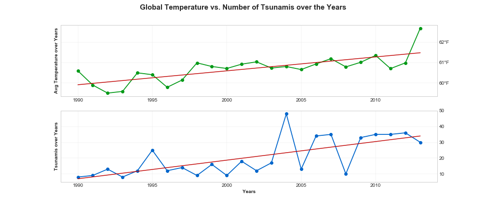
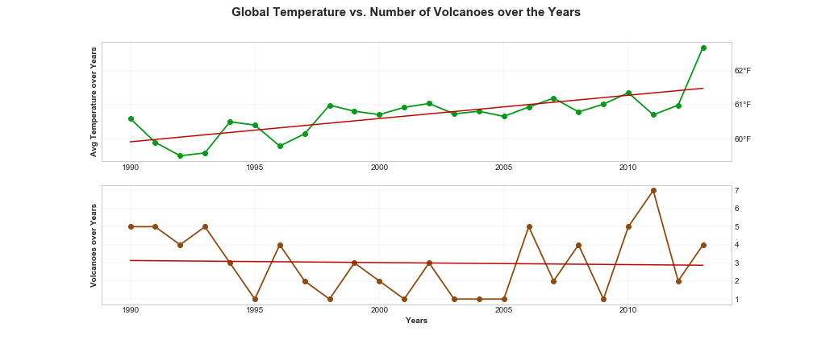
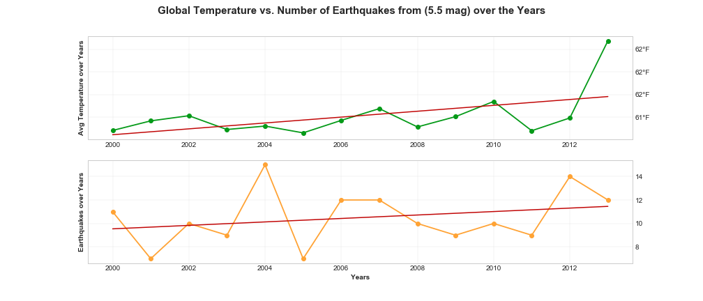

Average Land Temperature Changes and Natural Disaster Trends
Comparison between change in average land temperature and number of tsunamis, number of volcanic eruptions, and number of earthquakes with magnitude of 5.5 and higher.
Global warming could have an impact on natural disasters, creating a chain since these events affect each other. That is, as ice is melting at the poles due to increased land temperatures, the increased pressures underneath the surface of the earth can lead to tsunamis and earthquakes. A direct correlation between higher land temperature and a greater number of natural disasters cannot be established in this analysis. However, as the temperature has increased during recent years, our planet has started to experience these events more frequently, and with greater magnitude. These numbers can be compared in the following graphs.
Average Land Temperature Changes and Number of Tsunamis Over the Years

Both the average land temperature and the number of tsunamis per year have increased during the years 1990 – 2013.
Average Land Temperature Changes and Number of Volcanic Eruptions Over the Years

Even though the average land temperature has increased during the years 1990 – 2013, an increase in the number of volcanic eruptions cannot be established.
Average Land Temperature Changes and Number Earthqaukes Over the Years

Both the average land temperature and the number of earthquakes with a minimum magnitude of 5.5 have increased during the years 1990 – 2013.